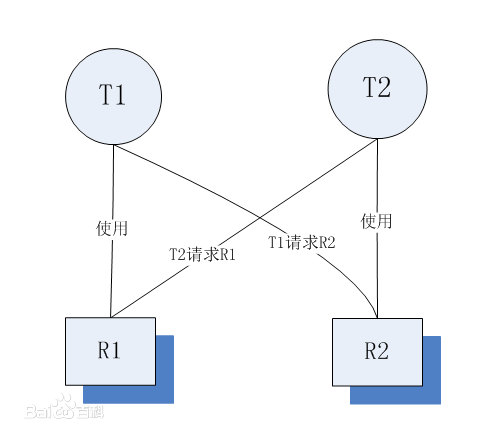

死锁
多线程死锁
死锁的四个必要条件

T1和T2表示2个任务（线程）;R1和R2表示2个资源；有任务指向资源的方向，从使用资源的角度讲，使用资源必须有先后顺序。
- 互斥
资源R1和R2不能共享，同一时间只能被一个任务使用 - 请求与保持
T1持有R1的同时，请求R2；T2持有R2的时候，请求R1 - 非剥夺
T1无法从T2上剥夺R2，相反同理 - 循环等待 图上的箭头构成环路，形成循环等待
数据库死锁
事务1更新数据行，执行顺序->update Row1->update Row2;
事务2更新数据行，执行顺序->update Row2->update Row1;
而且两个事务同时执行，都已经分别执行了第一步：
事务1占用了Row1,事务2占用了Row2，此时数据库发生了死锁。
同步和异步
- 同步: 一个进程在执行某个请求的时候，若该请求需要一段时间才能返回信息，那么这个进程将会一直等待下去，直到收到返回信息才继续执行下去。
- 异步: 指进程不需要一直等下去，而是继续执行下面的操作，不管其他进程的状态。当有消息返回时系统会通知进程进行处理，这样可以提高执行的效率。
线程同步(数据共享问题)
目的: 为了在多线程的操作中，同步数据。
背景: 当多个线程需要访问同一个资源的时候(本地资源：文件…；对象资源：算法用到的数组…),它们需要以某种顺序，来确保该资源在某一个特定时刻，只能被一个线程所访问。
如果使用异步，程序的运行结果将不可预料。因此，在这种情况下，就必须对数据进行同步，即限制只能有一个线程访问资源，其他线程必须等待。
解决方案：
- 临界区
- 互斥量
Mutex(类，互斥器);Monitor,Lock方法 - 信号量
- 事件 ManualResetEvent类，AutoResetEvent类(这两个都是由EventWaitHandle类派生出来的)